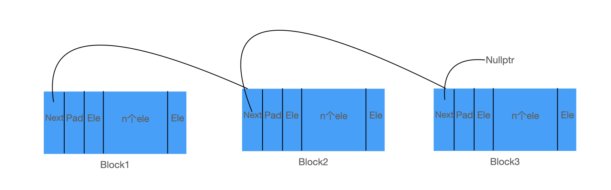

本篇文章将介绍内存池的原理以及实现
项目链接：GitHub
什么是内存池？
内存池和线程池类似，一次申请大量的内存，程序需要内存就从池子里拿，析构就将内存放回池子里
内存池的优缺点
优点
- 速度快， 因为内存池绝大部分情况下是用户态、无锁、O(1)或O(logN)的时间复杂度，所以速度会比malloc/free要快很多。
- 避免内存碎片， 频繁且不规律的malloc/free，尤其是大量小对象的时候，可能会导致内存释放后，空闲的内存块被已分配的内存块分割成无法合并的多块小“碎块”。此时突然申请一块大内存，虽然总的空闲内存大小是足够的，但我们却无法利用它们来完成内存分配。
- 增加内存的利用率， 由于malloc在分配内存时，需要增加一些必要的簿记信息，也就是记录内存块信息的头部结构，因此每次内存分配都会导致一定程度的浪费。而内存池不同，可以做到按需分配。使用得当的话内存浪费会很小。
缺点
使用内存池的缺点是会导致一定程度上的编程复杂度增加。不同方法实现的内存池有各自在使用上需要注意的地方，随随便便的用可能会引起意料之外的问题。
什么时候使用内存池？
当程序需要频繁在堆上申请和释放内存时
内存池原理
内存池的思想是，在真正使用内存之前，预先申请分配一定数量、大小预设的内存块留作备用。当有新的内存需求时，就从内存池中分出一部分内存块，若内存块不够再继续申请新的内存，当内存释放后就回归到内存块留作后续的复用，使得内存使用效率得到提升，一般也不会产生不可控制的内存碎片。
结构
union Slot_ {
value_type element; // 内存池内部元素类型
Slot_* next; // 指向下一个 block
};
typedef char* data_pointer_;
typedef Slot_ slot_type_;
typedef Slot_* slot_pointer_;
slot_pointer_ currentBlock_; // 指向当前块
slot_pointer_ currentSlot_; // 指向当前块的 ele
slot_pointer_ lastSlot_; // 指向当前块的最后一个 ele
slot_pointer_ freeSlots_; // 释放的空间都存在空闲链表中定义了一个联合体，可以表现为元素，也可以表现为下一个 block 的指针

其中 Next 指向下一个 Block（每个块默认大小为 4096B），Pad 为 Block 减去 Next 后剩余大小对 ele 类型大小取模的结果，最后有若干个 ele 元素
申请空间
template <typename T, size_t BlockSize>
void MemoryPool<T, BlockSize>::allocateBlock() {
// 分配新 Block
data_pointer_ newBlock = reinterpret_cast<data_pointer_>
(operator new(BlockSize));
// 头插法
reinterpret_cast<slot_pointer_>(newBlock)->next = currentBlock_;
currentBlock_ = reinterpret_cast<slot_pointer_>(newBlock);
// 保留一个大小指向下一个区块的地址，计算 body 位置
// 用 currentBlock_ 要类型转换
data_pointer_ body = newBlock + sizeof(slot_pointer_);
// 计算 body 中填充位置
size_type padding = padPointer(body, alignof(slot_type_));
// currentSlot_ 指向（body+padding）头，lastSlot_ 指向最后一个位置地址 +1
currentSlot_ = reinterpret_cast<slot_pointer_>(body + padding);
lastSlot_ = reinterpret_cast<slot_pointer_>
(newBlock + BlockSize - sizeof(slot_type_) + 1);
}
template <typename T, size_t BlockSize>
inline typename MemoryPool<T, BlockSize>::pointer
MemoryPool<T, BlockSize>::allocate(size_type n, const_pointer hint) {
if (freeSlots_) {
pointer res = reinterpret_cast<pointer>(freeSlots_);
freeSlots_ = freeSlots_->next;
return res;
} else {
// todo 为什么优先使用 freeSlot_ 中的块，那当前的块不就浪费了吗
// answer：freeSlots 存放的是 slot 不是 block，不影响当前块
if (currentSlot_ >= lastSlot_)
allocateBlock();
return reinterpret_cast<pointer>(currentSlot_++);
}
}申请空间先在空闲链表中找，若没有再再当前块中找，若用完了就去申请一个新块，分配新块中要注意填充空间，且分配空间用的是 placement new，即只申请不构造而 new 是先申请后构造
placement new
data_pointer_ newBlock = reinterpret_cast<data_pointer_>
(operator new(BlockSize));在申请的空间上 construct
template <typename T, size_t BlockSize>
template <typename U, typename... Args>
inline void
MemoryPool<T, BlockSize>::construct(U* p, Args&&... args) {
// todo 为什么类型是 U 不是 T
// answer：U 是 value_type，本质也是 T
new (p) U(std::forward<Args>(args)...);
}释放空间
// 释放单个元素
template <typename T, size_t BlockSize>
inline void
MemoryPool<T, BlockSize>::deallocate(pointer p, size_type n) {
if (p) {
reinterpret_cast<slot_pointer_>(p)->next = freeSlots_;
freeSlots_ = reinterpret_cast<slot_pointer_>(p);
}
}
// 析构单个元素
template <typename T, size_t BlockSize>
template <typename U>
inline void
MemoryPool<T, BlockSize>::destroy(U* p) {
if (p) {
p->~U();
}
}
// 按块释放
template <typename T, size_t BlockSize>
MemoryPool<T, BlockSize>::~MemoryPool()
noexcept {
// 不要写 currentSlot_ 会将值当作地址
slot_pointer_ curr = currentBlock_;
while (curr) {
slot_pointer_ t = curr->next;
// 转化为 void* 避免调用 dtor
operator delete(reinterpret_cast<void*>(curr));
curr = t;
}
}释放元素：先调用 destroy 后调用
deallocate
释放内存池：~MemoryPool()
移动
template <typename T, size_t BlockSize>
MemoryPool<T, BlockSize>&
MemoryPool<T, BlockSize>::operator=(MemoryPool &&rhs)
noexcept {
if (this != &rhs) {
std::swap(currentBlock_, rhs.currentBlock_);
currentSlot_ = rhs.currentSlot_;
lastSlot_ = rhs.lastSlot_;
freeSlots_ = rhs.freeSlots_;
}
return *this;
}注：移动相关的函数都是 noexcept
的，因为移动后原对象就可能损毁，不能进行第二次移动，另外非移动的且能保证一定不抛出异常的也可以用
noexcept 来提高性能
测试
链表栈的 push 和 pop 操作
// 入栈
template <typename T, typename Alloc>
void StackAlloc<T, Alloc>::push(T element) {
// 为一个节点分配内存
Node* newNode = allocator_.allocate(1);
// 调用节点的构造函数
allocator_.construct(newNode, Node());
// 入栈操作
newNode->data = element;
newNode->prev = head_;
head_ = newNode;
}
// 出栈
template <typename T, typename Alloc>
T StackAlloc<T, Alloc>::pop() {
// 出栈操作 返回出栈元素
T result = head_->data;
Node* tmp = head_->prev;
allocator_.destroy(head_);
allocator_.deallocate(head_, 1);
head_ = tmp;
return result;
}测试代码：
#define ELEMS 10000000
// 重复次数
#define REPS 100
int main()
{
clock_t start;
// 使用 STL 默认分配器
StackAlloc<int, std::allocator<int>> stackDefault;
start = clock();
for (int j = 0; j < REPS; j++)
{
assert(stackDefault.empty());
for (int i = 0; i < ELEMS; i++)
stackDefault.push(i);
for (int i = 0; i < ELEMS; i++)
stackDefault.pop();
}
std::cout << "Default Allocator Time: ";
std::cout << (((double)clock() - start) / CLOCKS_PER_SEC) << " s\n\n";
// 使用内存池
StackAlloc<int, MemoryPool<int>> stackPool;
start = clock();
for (int j = 0; j < REPS; j++)
{
assert(stackPool.empty());
for (int i = 0; i < ELEMS; i++)
stackPool.push(i);
for (int i = 0; i < ELEMS; i++)
stackPool.pop();
}
std::cout << "MemoryPool Allocator Time: ";
std::cout << (((double)clock() - start) / CLOCKS_PER_SEC) << " s\n\n";
return 0;
}通过链表栈的频繁 push 和 pop
操作来测试性能
Default Allocator Time: 59.2128 s
MemoryPool Allocator Time: 12.0348 s总结
通过这个项目收获了内存分配的相关知识，对于 C++
的相关特性，如模板，面向对象，可变参数，性能测试都有涉猎
最后这个项目也可以用单例模式来实现，这样整个程序就只有一个实例了，可以进一步调高性能，留给读者思考